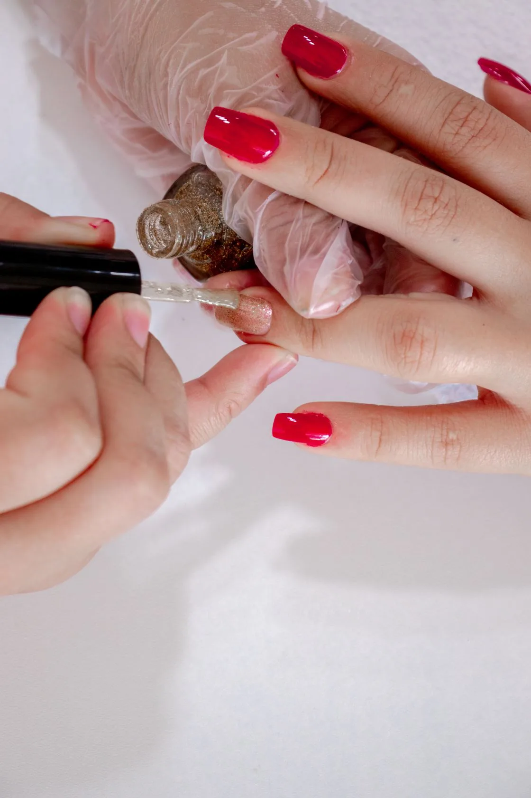

Ногтевой сервис · Мурманск
Маникюр в центре Мурманска
Мужской маникюр, уход за ногтями и покрытие. Выберите услугу и посмотрите варианты записи.
5,0 · Отзывы на Яндекс Картах (367)
Услуги и цены
Цены из карточки на Яндекс Картах. Актуальную стоимость уточняйте при записи.
Мужской маникюр
1850 ₽Маникюр без покрытия
1600 ₽маникюр + френч
3100 ₽

Как записаться
Откройте карточку студии на Яндекс Картах и выберите удобный способ связи. Там же указаны адрес и часы работы.
- Telegram
- ВК